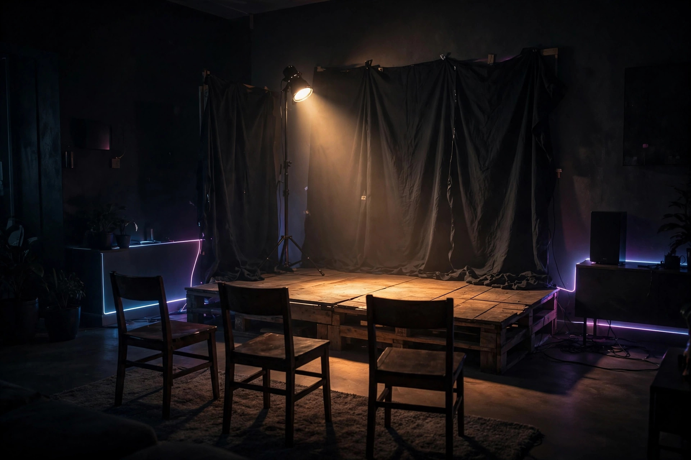

Surviving the Third Run-Through

Run-through number one, you were locked in. Genuinely moved, even. Number two, you were solid — a few mmhmms, a well-placed nod, full marks. Now your kid turns to you and says "okay, one more time, I want to get the ending right," and something in your soul quietly files for early retirement.
Here is the brutal truth of the repeat performance: the scene is identical, but your reaction budget is finite. Nobody — not the most devoted parent in history — can gasp convincingly at the same plot twist three times in one evening. The goal is no longer freshness. The goal is sustainability. Enter the Run-Through Survival Ladder.
The Run-Through Survival Ladder
Each pass gets a different strategy, because using run-one energy on run three is how parents end up staring at the wall with dead eyes.
- Run one: Full attention, spend freely. This is the only performance that counts as a real audience experience. Watch properly, react honestly, notice everything. Your genuine reactions here are an investment — they buy you credibility for everything that follows.
- Run two: The technician. Stop watching the story and start watching the craft. Is the entrance cleaner? Did the big line land earlier? You now have one legitimate job: spotting the difference between pass one and pass two. This keeps your brain busy and produces one genuine observation you can offer afterward ("the pause before the monologue was better that time").
- Run three: The specialist. Pick ONE thing to track and ignore everything else. Diction. Posture. The way they handle the prop sword. You are no longer an audience member; you are a consultant reviewing a single metric. At the end you deliver your one finding with the gravity of a film critic: "Your grip on the sword was much more confident that time." It is specific, it is true, and it required only 12% of your attention.
The between-passes reset ritual
The ladder only works if you actually reset between runs. When they say "one more time," you get a 90-second intermission, and you must use it:
- Stand up. Blood flow is attention flow. Walk to the kitchen, even if you don't need anything.
- Change your seat. A new angle is a new audience. Sit on the other end of the couch. Your brain reads it as a fresh event.
- Drink something. Water, tea, the dregs of your coffee. The physical act of sipping breaks the trance of the previous run.
- Pick your specialist metric. Decide before you sit down what you're tracking in run three. No decision, no focus — and focusless run-three parents are the ones who get caught checking the ceiling.
Energy levels vs. techniques: the table
Match your tactic to the fuel you actually have left, not the fuel you wish you had:
| Your energy | Your technique | What it looks like |
|---|---|---|
| High (run one) | Full audience | Real reactions, eye contact, spontaneous laughter. Spend it — this is the good stuff. |
| Medium (run two) | The technician | Spotting differences, one genuine note afterward. Engaged but analytical. |
| Low (run three) | The specialist | One metric, one grave observation. Maximum credibility, minimum effort. |
| Empty (run four+) | The archivist | "Can I record this one? I want to remember how it sounded." Now the phone is out with PERMISSION, and you can rewatch your own footage with fresh eyes tomorrow. |
What never to do on repeat viewings
Never mouth along with the lines — even if you know them by heart, mouthing along is the tell of a parent who has stopped being an audience and become a teleprompter. Never say "this part again?" out loud. Never reuse the exact same reaction — if you gasped at the plot twist in run one, your run-three gasp will sound like a tire deflating. And never, ever suggest they "save some for the actual show." The actual show is months away. There will be hundreds of run-throughs. Pace yourself.
The loving truth
Here is the part the joke usually skips: your kid keeps asking for "one more time" because your opinion is the one that matters. You are the audience of one, and no run-through is wasted on you — even the ones this season where you're running on fumes and tracking sword grip. The ladder isn't about caring less. It's about lasting long enough to be there for all of it.